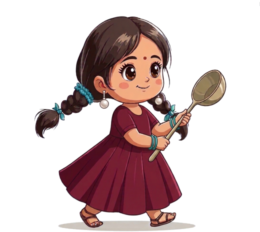

Responses closed
Thank you!
We are no longer collecting responses. Thank you to everyone who took the time to talk to us about food and cooking. It means a lot to us.
మేము ఇప్పుడు సమాధానాలు తీసుకోవడం లేదు. పాల్గొన్న అందరికీ ధన్యవాదములు!
हम अब जवाब नहीं ले रहे हैं। हिस्सा लेने वाले सभी लोगों का धन्यवाद!